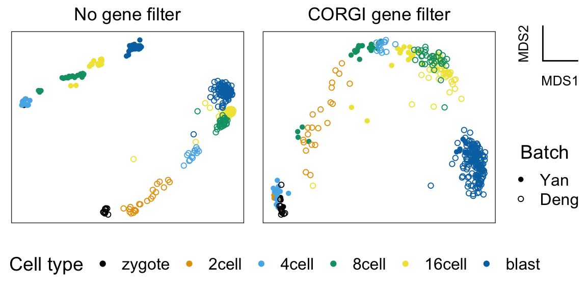

vignettes/corgi.Rmd
corgi.Rmdmy_color_palette <- c("#000000", "#E69F00", "#56B4E9", "#009E73", "#F0E442", "#0072B2", "#D55E00", "#CC79A7")
my_shape_palette <- c(16,1)
qplot <- function(...){
ggplot2::qplot(...) +
scale_color_manual(values = my_color_palette) +
scale_shape_manual(values = my_shape_palette)
}
plt_all <- plot_dimensionality_reduction(mds_all_genes, batch, cell_type)+
ggtitle("No gene filter")
plt_corgi <- plot_dimensionality_reduction(mds_corgi, batch, cell_type)+
ggtitle("CORGI gene filter")
color_legend <- get_color_legend(cell_type, my_color_palette, legend.position = "bottom",ncol = 6)
batch_legend <- get_shape_legend(batch, my_shape_palette)
axes_legend <- get_axes_legend("MDS")plot_grid(
plot_grid(
plt_all,
plt_corgi,
plot_grid(axes_legend, batch_legend, nrow = 2),
nrow = 1,
rel_widths = c(3, 3, 1)
),
color_legend,
nrow = 2,
rel_heights = c(4,1)
)